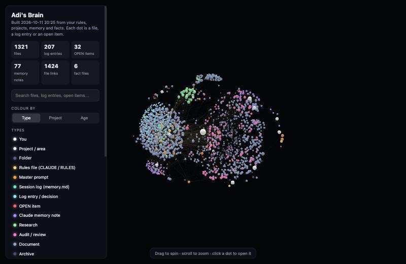

Work / Knowledge workflow
Context map ('brain')
A generated 3D map of my whole AI setup: every rules file, master prompt, session log, memory note, open item and project document, linked by the references between them. I wanted to see how my systems fit together, and to spot stale or orphaned rules.
- My role
- Idea, direction, acceptance
- Built with
- Claude Code, Python
- Period
- Oct 2026
- Status
- Built; used as a viewer
At a glance
- Problem
- Hundreds of rules, prompts and logs across projects, with no way to see how they connect.
- What I did
- Asked for it, pushed for a usable map, and accepted Claude's correction about what it could and couldn't do.
- Result
- 1,321 files, 207 log entries and 32 open items mapped and searchable in one page.
- Built with
- Claude Code, Python standard library, 3d-force-graph (MIT)

What it does
A Python script reads my rules files, project logs, memory notes and fact files, and writes one page: a 3D graph where every dot is a file, a log entry or an open item, coloured by type, project or age. You can search it, and clicking a dot opens it.
Why I built it
My rules, prompts, logs and open items are spread across many projects. I wanted to see how they connect and spot stale or orphaned rules.
My role and the AI's role
- Me: the idea, the push for a usable map, and accepting the correction below.
- Claude Code: wrote the generator and built the page.
How it works
A Python script reads the files, links them by the references between them, and writes a single page that draws the graph with an open-source 3D library. Each dot can be coloured by type, project or age.
What I caught and changed
I first wanted it to cut the tokens AI sessions spend re-reading context. Claude pointed out that it would be a viewer, not a token saver, because sessions don't re-read every file anyway. I built it as a viewer, and its README says exactly that.
How it was checked
The counts come from the map's own build on 11 Oct 2026. It wasn't tested beyond using it.
Where it is now
Built and working as a viewer. It isn't rebuilt automatically.
Tools and credits
- Built with Claude Code (Anthropic). 3D rendering by 3d-force-graph (vasturiano, MIT licence).
Status checked 20 Oct 2026. Counts are from the map's own build on 11 Oct 2026.